Memorias
Tips y trucos para aprovechar el almacenamiento de tu PSVita al máximo!.

Para esta Guia
Requisitos para este tutorial
- PC o Notebook (Para pasar Archivos)
Empezando este Tutorial
- Para manejar las memorias de nuestra PSVita devemos abrir VitaShell 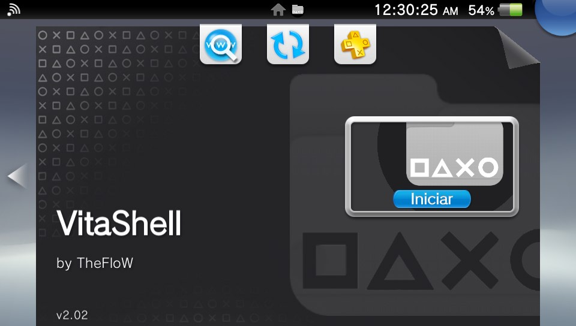
- Al Abrir la Aplicación podemos ver todas las memorias de nuestra PSVita
- Solo nos centraremos en dos Memorias en
ux0:yuma0: Uxo:Memoria Principal (sd2vita)Uma0:Memoria secundaria (Mem. Original)
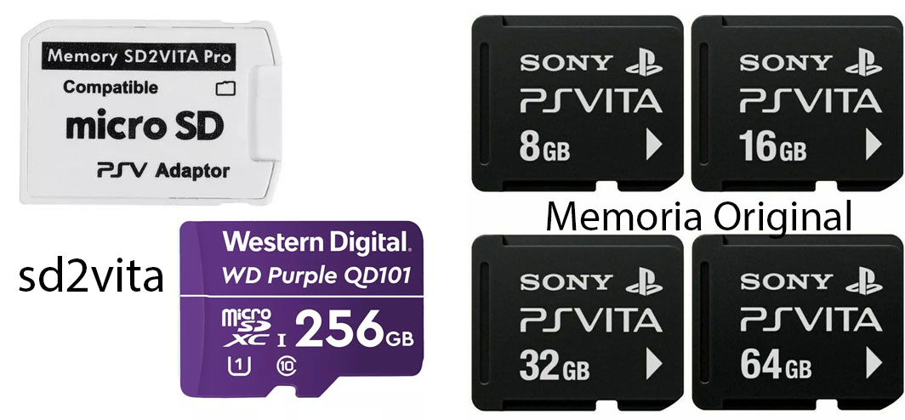
- En la memoria de
uma0:podemos colocar todos nuestros juegos de PSP - Para esto abrimos nuestro emulado de PSP Adrenaline 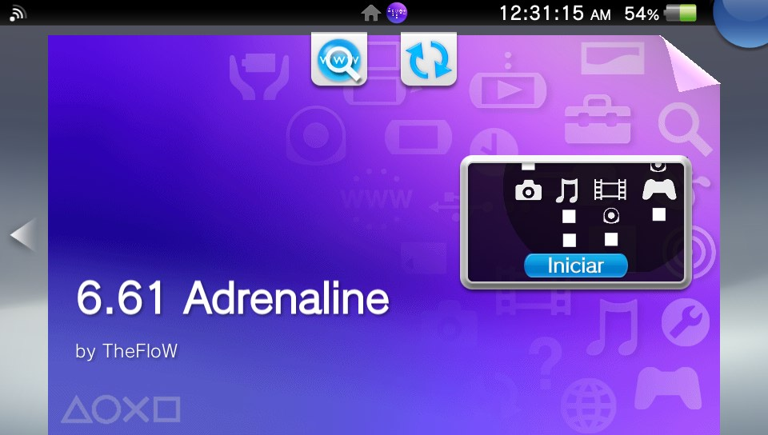
- Presionando el Botón de PS nos vamos a ajustes de Adrenaline 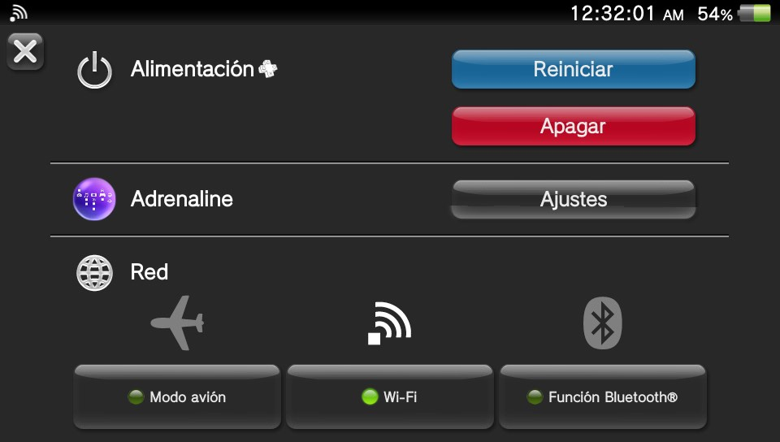
- Y buscamos con
 en Settings y en este menú vamos a Memory Stick Location
en Settings y en este menú vamos a Memory Stick Location uxo:pspemu
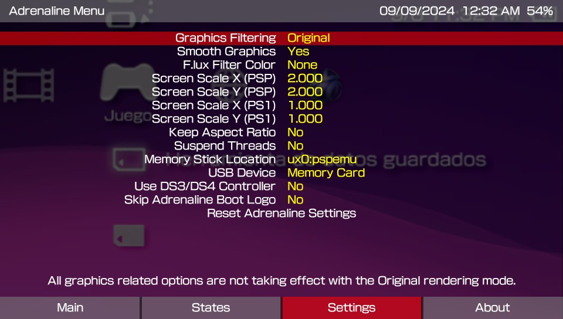
- Y podemos cambiar a
uma0:pspemupara usar la memoria original
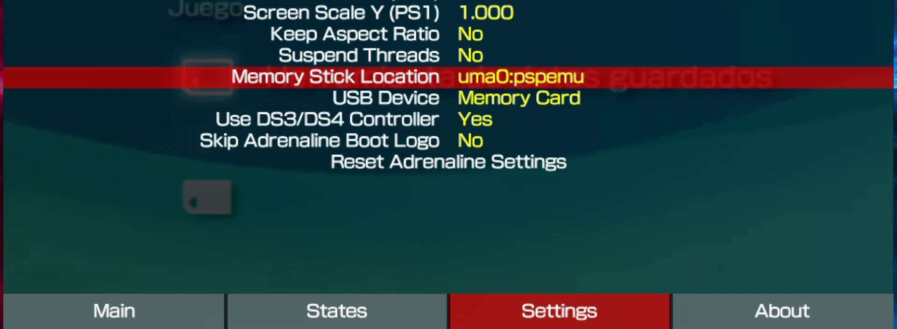
- Podemos tener juegos en
ux0yuma0para nuestra Adrenaline - En nuestra memoria
ux0siempre será la memoria principal - En el directorio
app/guarda las burbujas y o accesos directos - En el directorio
data/guarda los archivos de nuestros juegos - En el directorio
pspemu/guarda todo referente al emulador de psp - Para pasar archivos a nuestra consola
- Para esto abrimos VitaShell y le damos a
 y vamos a SELECT button y podemos seleccionar FTP o USB
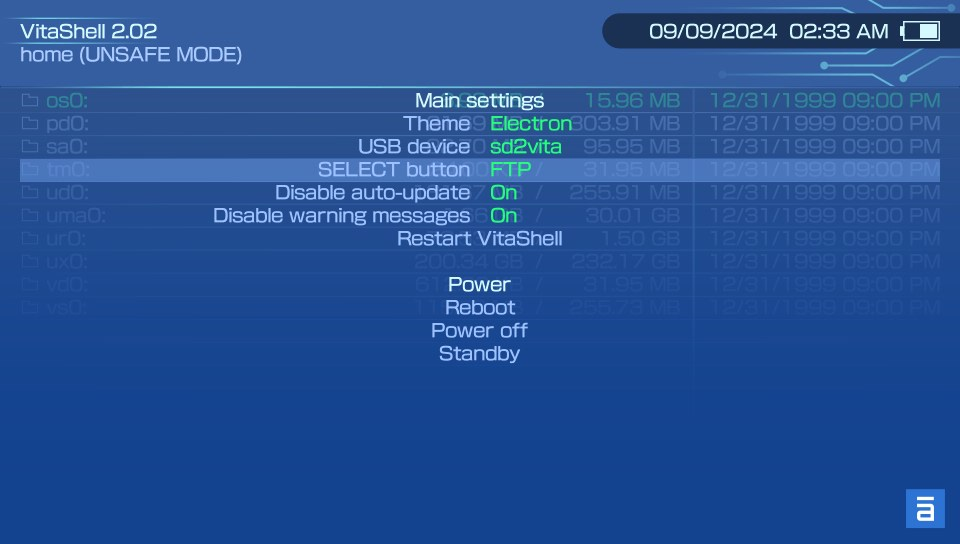
y vamos a SELECT button y podemos seleccionar FTP o USB
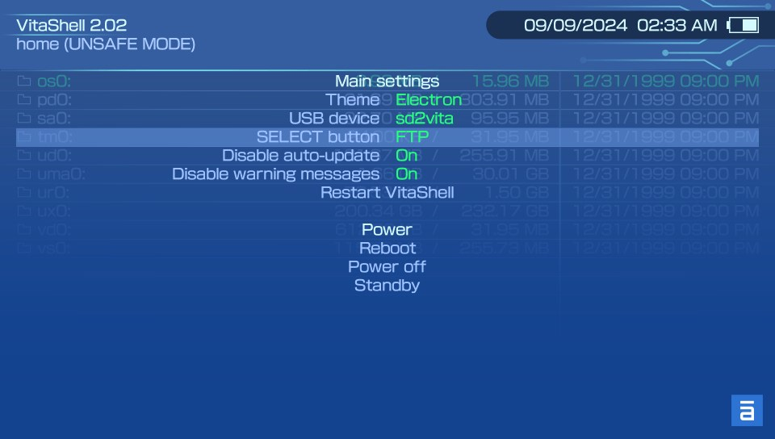
- Solo después nos queda presionar
 en nuestra consola con VitaShell para conectarnos mediante lo que seleccionamos anterior mente
en nuestra consola con VitaShell para conectarnos mediante lo que seleccionamos anterior mente - Podemos pasarle archivos mediante USB
- El problema que no nos muestra todas las carpetas de la memoria
- Para esto le damos a mostrar archivos ocultos en nuestro computador
- Podemos pasarle archivos mediante FTP
- Para esto debemos descargar un programa FileZilla 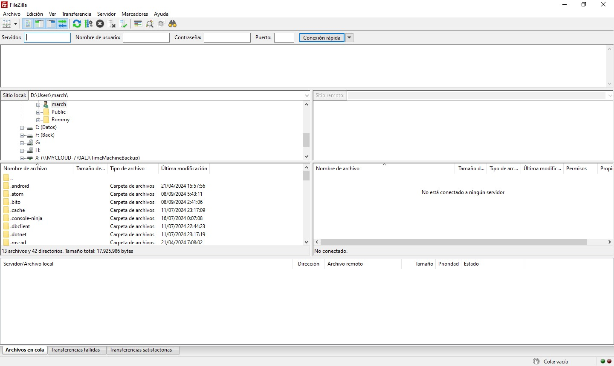
- Una ves instalado lo abrimos y colocamos la dirección ip que nos muestra (tener la consola conectada a la misma red de internet que el computador) 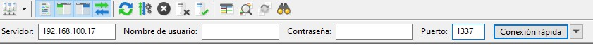
- Y le damos a conexión rápida y listo a pasarle archivos en el lado derecho del programa 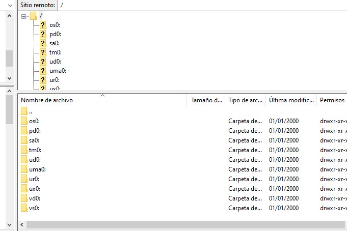
- Y listo
×